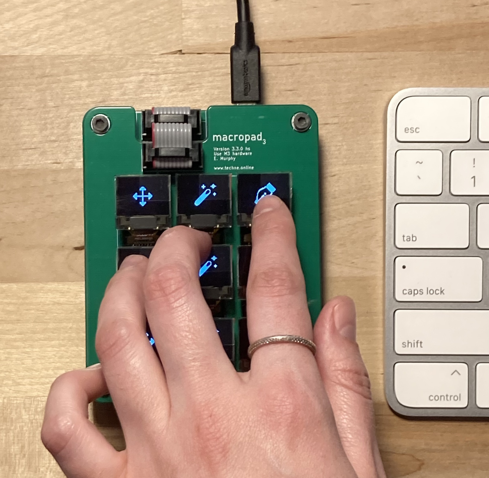

The Macropad aims to make the use of complex user interfaces less busy, and more intuitive. It's a USB keypad with dynamic legends, which allow the user to quickly navigate software without needing to remember key-binds or macros.
 indicates a project completed as part of a class at the Cooper Union.
indicates a project completed as part of a class at the Cooper Union.